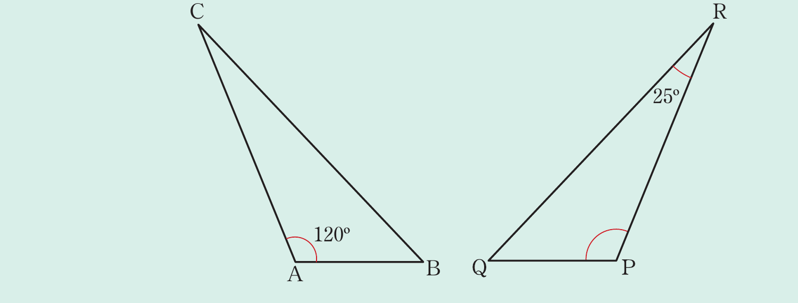

Example 3.2
Given that △ABC ~ △PQR, find the value of if:
(a) = 120° and = 25°
(b) Q\hat{P}R + B\hat{C}A = 145°
Solution
Consider the following figures of △ABC and △PQR.

(a) Since corresponds to , then = = 25°.
In △ABC, + + = 180° (sum of interior angles in a triangle)
A\hat{B}C + 25° + 120° = 180°
Thus, = 180° − 145° = 35°.
Therefore, = 35°.
(b) Since corresponds to , then = .
Thus, + = + = 120° + 25° = 145°.
But + + = 180° (sum of interior angles in a triangle).
It follows that 145° + = 180°
A\hat{B}C = 180° − 145° = 35°
Therefore, = 35°.
Example 3.3
In the following figure, name the triangles which are similar and determine the constant of proportionality needed to show their similarity.